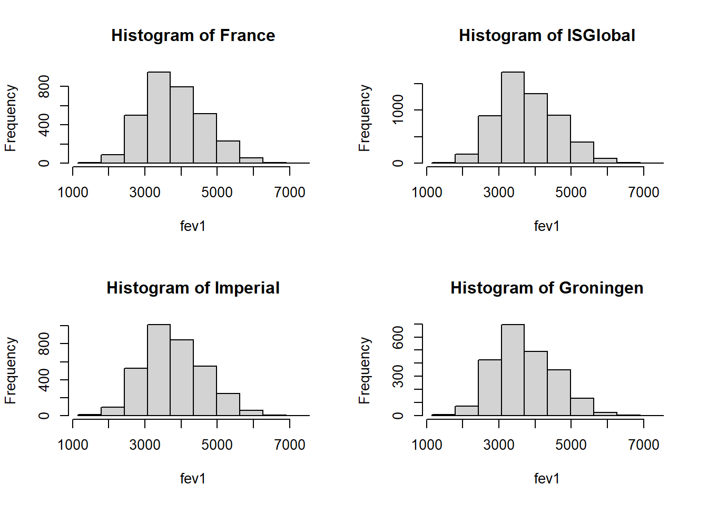
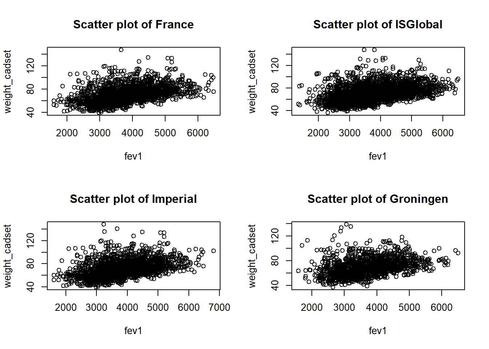

install.packages("devtools")
library(devtools)
devtools::session_info()DataSHIELD Workshop: Use case CADSETshield, Friday 4th July 2025
INFORMATION FOR NEWCOMERS TO RSTUDIO NOTEBOOKS:
This is an R Markdown Notebook. When you execute code within the notebook, the results appear beneath the code.
Try executing this chunk by clicking the Run button within the chunk or by placing your cursor inside it and pressing Ctrl+Shift+Enter.
DataSHIELD for analyzing simulated CADSET data
The plan for this workshop is as follows:
- Installing DataSHIELD
- Logging in and assigning data
- Describing data
- Manipulating data
- Subsetting data
- Data manipulation with dsHelper
- Making graphs
- Performing regression analysis
Installing DataSHIELD
Firstly: check whether we have the right R packages installed to run DataSHIELD: using the very helpful devtools package (which has already been installed for us by Stuart!), we’ll use the “Session info” command:
We are missing some of the necessary packages: “DSI”, “DSOpal” and “dsBaseClient”.
install.packages('DSI')
install.packages('DSOpal')
install.packages("https://cran.r-project.org/src/contrib/Archive/panelaggregation/panelaggregation_0.1.1.tar.gz", repos = NULL, type = 'source')
install.packages('dsBaseClient', repos=c(getOption('repos'), 'http://cran.datashield.org'), dependencies=TRUE)
install.packages("metafor")
devtools::install_github("timcadman/ds-helper")Also some packages for Armadillo
install.packages("MolgenisArmadillo")
install.packages("DSMolgenisArmadillo")Remember to load them into this R session using “library()” command:
library(DSI)Cargando paquete requerido: progressCargando paquete requerido: R6library(DSOpal)Cargando paquete requerido: opalrCargando paquete requerido: httrlibrary(MolgenisArmadillo)
library(DSMolgenisArmadillo)Cargando paquete requerido: MolgenisAuth
Adjuntando el paquete: 'DSMolgenisArmadillo'The following object is masked from 'package:MolgenisArmadillo':
armadillo.get_tokenlibrary(dsBaseClient)
library(dsHelper)
library(metafor)Cargando paquete requerido: MatrixCargando paquete requerido: metadatCargando paquete requerido: numDeriv
Loading the 'metafor' package (version 4.8-0). For an
introduction to the package please type: help(metafor)Check that they have now been added:
devtools::session_info()Warning in system2("quarto", "-V", stdout = TRUE, env = paste0("TMPDIR=", : el
comando ejecutado '"quarto"
TMPDIR=C:/Users/jrgonzalez/AppData/Local/Temp/RtmpwZPIIY/file406414c15134 -V'
tiene el estatus 1─ Session info ───────────────────────────────────────────────────────────────
setting value
version R version 4.5.1 (2025-06-13 ucrt)
os Windows 11 x64 (build 26100)
system x86_64, mingw32
ui RTerm
language (EN)
collate Spanish_Spain.utf8
ctype Spanish_Spain.utf8
tz Europe/Madrid
date 2025-07-04
pandoc 3.4 @ C:/Program Files/RStudio/resources/app/bin/quarto/bin/tools/ (via rmarkdown)
quarto NA @ C:\\PROGRA~1\\RStudio\\RESOUR~1\\app\\bin\\quarto\\bin\\quarto.exe
─ Packages ───────────────────────────────────────────────────────────────────
package * version date (UTC) lib source
arrow 20.0.0.2 2025-05-26 [1] CRAN (R 4.5.0)
assertthat 0.2.1 2019-03-21 [1] CRAN (R 4.5.0)
backports 1.5.0 2024-05-23 [1] CRAN (R 4.5.0)
base64enc 0.1-3 2015-07-28 [1] CRAN (R 4.5.0)
bit 4.6.0 2025-03-06 [1] CRAN (R 4.5.0)
bit64 4.6.0-1 2025-01-16 [1] CRAN (R 4.5.0)
boot 1.3-31 2024-08-28 [1] CRAN (R 4.5.1)
cachem 1.1.0 2024-05-16 [1] CRAN (R 4.5.0)
checkmate 2.3.2 2024-07-29 [1] CRAN (R 4.5.0)
cli 3.6.5 2025-04-23 [1] CRAN (R 4.5.0)
crayon 1.5.3 2024-06-20 [1] CRAN (R 4.5.0)
data.table 1.17.6 2025-06-17 [1] CRAN (R 4.5.0)
devtools 2.4.5 2022-10-11 [1] CRAN (R 4.5.0)
digest 0.6.37 2024-08-19 [1] CRAN (R 4.5.0)
dplyr 1.1.4 2023-11-17 [1] CRAN (R 4.5.0)
dsBaseClient * 6.3.0 2025-07-03 [1] local
dsHelper * 1.7.1 2025-07-03 [1] Github (timcadman/ds-helper@1b2348d)
DSI * 1.7.1 2024-11-03 [1] CRAN (R 4.5.0)
DSMolgenisArmadillo * 2.0.9 2024-07-09 [1] CRAN (R 4.5.0)
DSOpal * 1.4.0 2022-10-06 [1] CRAN (R 4.5.0)
ellipsis 0.3.2 2021-04-29 [1] CRAN (R 4.5.0)
evaluate 1.0.4 2025-06-18 [1] CRAN (R 4.5.0)
fastmap 1.2.0 2024-05-15 [1] CRAN (R 4.5.0)
forcats 1.0.0 2023-01-29 [1] CRAN (R 4.5.0)
fs 1.6.6 2025-04-12 [1] CRAN (R 4.5.0)
generics 0.1.4 2025-05-09 [1] CRAN (R 4.5.0)
glue 1.8.0 2024-09-30 [1] CRAN (R 4.5.0)
haven 2.5.5 2025-05-30 [1] CRAN (R 4.5.0)
hms 1.1.3 2023-03-21 [1] CRAN (R 4.5.0)
htmltools 0.5.8.1 2024-04-04 [1] CRAN (R 4.5.0)
htmlwidgets 1.6.4 2023-12-06 [1] CRAN (R 4.5.0)
httpuv 1.6.16 2025-04-16 [1] CRAN (R 4.5.0)
httr * 1.4.7 2023-08-15 [1] CRAN (R 4.5.0)
httr2 1.1.2 2025-03-26 [1] CRAN (R 4.5.0)
jsonlite 2.0.0 2025-03-27 [1] CRAN (R 4.5.0)
knitr 1.50 2025-03-16 [1] CRAN (R 4.5.0)
labelled 2.14.1 2025-05-06 [1] CRAN (R 4.5.0)
later 1.4.2 2025-04-08 [1] CRAN (R 4.5.0)
lattice 0.22-7 2025-04-02 [1] CRAN (R 4.5.1)
lifecycle 1.0.4 2023-11-07 [1] CRAN (R 4.5.0)
lme4 1.1-37 2025-03-26 [1] CRAN (R 4.5.0)
magrittr 2.0.3 2022-03-30 [1] CRAN (R 4.5.0)
MASS 7.3-65 2025-02-28 [1] CRAN (R 4.5.1)
mathjaxr 1.8-0 2025-04-30 [1] CRAN (R 4.5.0)
Matrix * 1.7-3 2025-03-11 [1] CRAN (R 4.5.1)
memoise 2.0.1 2021-11-26 [1] CRAN (R 4.5.0)
metadat * 1.4-0 2025-02-04 [1] CRAN (R 4.5.0)
metafor * 4.8-0 2025-01-28 [1] CRAN (R 4.5.0)
mime 0.13 2025-03-17 [1] CRAN (R 4.5.0)
miniUI 0.1.2 2025-04-17 [1] CRAN (R 4.5.0)
minqa 1.2.8 2024-08-17 [1] CRAN (R 4.5.0)
MolgenisArmadillo * 2.9.1 2025-06-13 [1] CRAN (R 4.5.0)
MolgenisAuth * 0.0.25 2023-02-20 [1] CRAN (R 4.5.0)
nlme 3.1-168 2025-03-31 [1] CRAN (R 4.5.1)
nloptr 2.2.1 2025-03-17 [1] CRAN (R 4.5.0)
numDeriv * 2016.8-1.1 2019-06-06 [1] CRAN (R 4.5.0)
opalr * 3.4.2 2024-09-18 [1] CRAN (R 4.5.0)
pillar 1.10.2 2025-04-05 [1] CRAN (R 4.5.0)
pkgbuild 1.4.8 2025-05-26 [1] CRAN (R 4.5.0)
pkgconfig 2.0.3 2019-09-22 [1] CRAN (R 4.5.0)
pkgload 1.4.0 2024-06-28 [1] CRAN (R 4.5.0)
prettyunits 1.2.0 2023-09-24 [1] CRAN (R 4.5.0)
profvis 0.4.0 2024-09-20 [1] CRAN (R 4.5.0)
progress * 1.2.3 2023-12-06 [1] CRAN (R 4.5.0)
promises 1.3.3 2025-05-29 [1] CRAN (R 4.5.0)
purrr 1.0.4 2025-02-05 [1] CRAN (R 4.5.0)
R6 * 2.6.1 2025-02-15 [1] CRAN (R 4.5.0)
rappdirs 0.3.3 2021-01-31 [1] CRAN (R 4.5.0)
rbibutils 2.3 2024-10-04 [1] CRAN (R 4.5.0)
Rcpp 1.0.14 2025-01-12 [1] CRAN (R 4.5.0)
Rdpack 2.6.4 2025-04-09 [1] CRAN (R 4.5.0)
readr 2.1.5 2024-01-10 [1] CRAN (R 4.5.0)
reformulas 0.4.1 2025-04-30 [1] CRAN (R 4.5.0)
remotes 2.5.0 2024-03-17 [1] CRAN (R 4.5.0)
rlang 1.1.6 2025-04-11 [1] CRAN (R 4.5.0)
rlist 0.4.6.2 2021-09-03 [1] CRAN (R 4.5.0)
rmarkdown 2.29 2024-11-04 [1] CRAN (R 4.5.0)
rstudioapi 0.17.1 2024-10-22 [1] CRAN (R 4.5.0)
sessioninfo 1.2.3 2025-02-05 [1] CRAN (R 4.5.0)
shiny 1.11.0 2025-06-24 [1] CRAN (R 4.5.0)
stringi 1.8.7 2025-03-27 [1] CRAN (R 4.5.0)
stringr 1.5.1 2023-11-14 [1] CRAN (R 4.5.0)
tibble 3.3.0 2025-06-08 [1] CRAN (R 4.5.0)
tidyr 1.3.1 2024-01-24 [1] CRAN (R 4.5.0)
tidyselect 1.2.1 2024-03-11 [1] CRAN (R 4.5.0)
triebeard 0.4.1 2023-03-04 [1] CRAN (R 4.5.0)
tzdb 0.5.0 2025-03-15 [1] CRAN (R 4.5.0)
urlchecker 1.0.1 2021-11-30 [1] CRAN (R 4.5.0)
urltools 1.7.3.1 2025-06-12 [1] CRAN (R 4.5.0)
usethis 3.1.0 2024-11-26 [1] CRAN (R 4.5.0)
vctrs 0.6.5 2023-12-01 [1] CRAN (R 4.5.0)
xfun 0.52 2025-04-02 [1] CRAN (R 4.5.0)
xtable 1.8-4 2019-04-21 [1] CRAN (R 4.5.0)
yaml 2.3.10 2024-07-26 [1] CRAN (R 4.5.0)
[1] C:/Users/jrgonzalez/AppData/Local/Programs/R/R-4.5.1/library
* ── Packages attached to the search path.
──────────────────────────────────────────────────────────────────────────────Logging in and assigning data
The login script has to be customized to fit the data you are trying to connect to.
The “builder <-” and “builder$append” functions are standard features.
For this demonstration we are connecting to simulated data- but if it was data of real people, it would be very important for us not to be able to see individual patients’ information.
For this workshop, we’ll imagine that the data is hosted in a single three/four Opal repositories and one Armadillo. The below code creates a local R object with the login details for each study:
builder <- DSI::newDSLoginBuilder()
# Server 1: France
builder$append(
server = 'France',
url = "https://opal-demo.obiba.org",
user = "dsuser",
password = "P@ssw0rd"
)
# Server 2: Spain (ISGlobal)
builder$append(
server = 'ISGlobal',
url = "https://opal.isglobal.org/repo",
user = "invited",
password = "12345678Aa@"
)
# Server 3: UK (Imperial)
builder$append(
server = "Imperial",
url = "https://cadset.dsi.ic.ac.uk/",
user = "jrgonzalez",
password = "Cadset_test1!"
)
# Server 4: LEAD
# builder$append(
# server = 'LEAD',
# url = "https://ods.lbg.ac.at",
# user = "JuanGonzalez",
# password = "Gp7#vXq9Lz"
# )For Groningen we need to connect through Molgenis and we require a personal token
token <- armadillo.get_token("https://cadsetgroningennl.molgeniscloud.org/")
# Server 5: Groningen
builder$append(
server = "Groningen",
url = "https://cadsetgroningennl.molgeniscloud.org/",
token = token,
driver = "ArmadilloDriver"
)Now we need to connect, referring to the login information in the data frame we have just created:
logindata <- builder$build()
conns <- datashield.login(logins = logindata, assign = FALSE)
Logging into the collaborating serversThe ‘assign’ argument can be set to either ‘TRUE’ or ‘FALSE’. If set to ‘TRUE’, all the available variables within that table will be assigned to a serverside data frame and available to access. If you only need a small subset of available variables it can be preferable to set this to ‘FALSE’ and later use the function ‘datashield.assign’ to separately assign only the variables you need (as it is this case). The output of this box has useful progress bars which show the progress of connecting to studies, one by one.
We can see the serverside doesn’t have any object by running:
ds.ls()$France
$France$environment.searched
[1] "R_GlobalEnv"
$France$objects.found
character(0)
$ISGlobal
$ISGlobal$environment.searched
[1] "R_GlobalEnv"
$ISGlobal$objects.found
character(0)
$Imperial
$Imperial$environment.searched
[1] "R_GlobalEnv"
$Imperial$objects.found
character(0)
$Groningen
$Groningen$environment.searched
[1] "R_GlobalEnv"
$Groningen$objects.found
character(0)We need to create the objects either form tables (e.g. a data frame called cadset ) or resources.
In our case, we have set up all Opals having the simulated datasets as tables.
datashield.assign.table(conns, symbol = "cadset",
table = list(
France = "CADSET-coh1.cadset_two",
ISGlobal = "CADSET.cadset_four",
Imperial = "CADSET.cadset_six",
Groningen = "cad/folder/data")
)NOTE: let us imagine that we have a resource rather than a table. Then, and France contains a resource
datashield.assign.resource(
conns$France,
symbol = "resource",
resource = list(France = "CADSET-coh1.cadset_1")
)
datashield.assign.expr(
conns$France,
symbol = "cadset",
expr = quote(as.resource.data.frame(resource))
)Now we can see that each server has the data in an object called cadset
ds.ls()$France
$France$environment.searched
[1] "R_GlobalEnv"
$France$objects.found
[1] "cadset"
$ISGlobal
$ISGlobal$environment.searched
[1] "R_GlobalEnv"
$ISGlobal$objects.found
[1] "cadset"
$Imperial
$Imperial$environment.searched
[1] "R_GlobalEnv"
$Imperial$objects.found
[1] "cadset"
$Groningen
$Groningen$environment.searched
[1] "R_GlobalEnv"
$Groningen$objects.found
[1] "cadset"which is a data.fame
ds.class("cadset")$France
[1] "data.frame"
$ISGlobal
[1] "data.frame"
$Imperial
[1] "data.frame"
$Groningen
[1] "data.frame"and the data.frame has these variables
ds.colnames("cadset")$France
[1] "cohort_cadset" "malesex_cadset" "age_cadset"
[4] "fev1_cadset" "fvc_cadset" "ratio_cadset"
[7] "eversmoker_cadset" "smokerstatus_cadset" "packyears_cadset"
[10] "height_cadset" "weight_cadset" "fev1pcpredicted_cadset"
[13] "fvcpcpredicted_cadset" "ratiounderfixed_cadset" "ratiounderlln_cadset"
$ISGlobal
[1] "cohort_cadset" "malesex_cadset" "age_cadset"
[4] "fev1_cadset" "fvc_cadset" "ratio_cadset"
[7] "eversmoker_cadset" "smokerstatus_cadset" "packyears_cadset"
[10] "height_cadset" "weight_cadset" "fev1pcpredicted_cadset"
[13] "fvcpcpredicted_cadset" "ratiounderfixed_cadset" "ratiounderlln_cadset"
$Imperial
[1] "cohort_cadset" "malesex_cadset" "age_cadset"
[4] "fev1_cadset" "fvc_cadset" "ratio_cadset"
[7] "eversmoker_cadset" "smokerstatus_cadset" "packyears_cadset"
[10] "height_cadset" "weight_cadset" "fev1pcpredicted_cadset"
[13] "fvcpcpredicted_cadset" "ratiounderfixed_cadset" "ratiounderlln_cadset"
$Groningen
[1] "cohort_cadset" "malesex_cadset" "age_cadset"
[4] "fev1_cadset" "fvc_cadset" "ratio_cadset"
[7] "eversmoker_cadset" "smokerstatus_cadset" "packyears_cadset"
[10] "height_cadset" "weight_cadset" "fev1pcpredicted_cadset"
[13] "fvcpcpredicted_cadset" "ratiounderfixed_cadset" "ratiounderlln_cadset" Describing data (‘aggregate-type functions’)
There are many data exploration functions already implemented into DataSHIELD: let’s check it out at the wiki https://data2knowledge.atlassian.net/wiki/spaces/DSDEV/pages/2733244417/Version+6.2.0
Scroll down to “Data structure queries”. Let’s try out a few of these:
ds.dim(x="cadset", datasources = conns)$`dimensions of cadset in France`
[1] 3150 15
$`dimensions of cadset in ISGlobal`
[1] 5500 15
$`dimensions of cadset in Imperial`
[1] 3350 15
$`dimensions of cadset in Groningen`
[1] 2200 15
$`dimensions of cadset in combined studies`
[1] 14200 15NOTE: writting datasources = conns is not required. This is just to emphasize that if you have several connections you need to specify which one is yours. By default, it missing it looks for your local environment
ls()[1] "builder" "conns" "logindata" "token" So, this would also work
ds.dim("cadset")$`dimensions of cadset in France`
[1] 3150 15
$`dimensions of cadset in ISGlobal`
[1] 5500 15
$`dimensions of cadset in Imperial`
[1] 3350 15
$`dimensions of cadset in Groningen`
[1] 2200 15
$`dimensions of cadset in combined studies`
[1] 14200 15ds.colnames("cadset")$France
[1] "cohort_cadset" "malesex_cadset" "age_cadset"
[4] "fev1_cadset" "fvc_cadset" "ratio_cadset"
[7] "eversmoker_cadset" "smokerstatus_cadset" "packyears_cadset"
[10] "height_cadset" "weight_cadset" "fev1pcpredicted_cadset"
[13] "fvcpcpredicted_cadset" "ratiounderfixed_cadset" "ratiounderlln_cadset"
$ISGlobal
[1] "cohort_cadset" "malesex_cadset" "age_cadset"
[4] "fev1_cadset" "fvc_cadset" "ratio_cadset"
[7] "eversmoker_cadset" "smokerstatus_cadset" "packyears_cadset"
[10] "height_cadset" "weight_cadset" "fev1pcpredicted_cadset"
[13] "fvcpcpredicted_cadset" "ratiounderfixed_cadset" "ratiounderlln_cadset"
$Imperial
[1] "cohort_cadset" "malesex_cadset" "age_cadset"
[4] "fev1_cadset" "fvc_cadset" "ratio_cadset"
[7] "eversmoker_cadset" "smokerstatus_cadset" "packyears_cadset"
[10] "height_cadset" "weight_cadset" "fev1pcpredicted_cadset"
[13] "fvcpcpredicted_cadset" "ratiounderfixed_cadset" "ratiounderlln_cadset"
$Groningen
[1] "cohort_cadset" "malesex_cadset" "age_cadset"
[4] "fev1_cadset" "fvc_cadset" "ratio_cadset"
[7] "eversmoker_cadset" "smokerstatus_cadset" "packyears_cadset"
[10] "height_cadset" "weight_cadset" "fev1pcpredicted_cadset"
[13] "fvcpcpredicted_cadset" "ratiounderfixed_cadset" "ratiounderlln_cadset" What it is mandatory is to write the name of the data.frame with ““.
We’re going to be focus on FEV1.
This is a measure of HDL Cholesterol (aka the “good cholesterol” level)
Let’s run some summary statistic commands
ds.class(x='cadset$fev1_cadset')$France
[1] "numeric"
$ISGlobal
[1] "numeric"
$Imperial
[1] "numeric"
$Groningen
[1] "numeric"ds.length(x='cadset$fev1_cadset')$`length of cadset$fev1_cadset in France`
[1] 3150
$`length of cadset$fev1_cadset in ISGlobal`
[1] 5500
$`length of cadset$fev1_cadset in Imperial`
[1] 3350
$`length of cadset$fev1_cadset in Groningen`
[1] 2200
$`total length of cadset$fev1_cadset in all studies combined`
[1] 14200ds.mean(x='cadset$fev1_cadset')$Mean.by.Study
EstimatedMean Nmissing Nvalid Ntotal
France 3803.702 0 3150 3150
ISGlobal 3778.882 0 5500 5500
Imperial 3805.334 0 3350 3350
Groningen 3705.382 0 2200 2200
$Nstudies
[1] 4
$ValidityMessage
ValidityMessage
France "VALID ANALYSIS"
ISGlobal "VALID ANALYSIS"
Imperial "VALID ANALYSIS"
Groningen "VALID ANALYSIS"What is this other function to obtain the mean? Let’s use the DataSHIELD function help documentation.
?ds.quantileMeanstarting httpd help server ... doneNow, putting into action some of what we’ve learned about the function arguments. NOTE: ‘split’ is in case you have data from different servers and you want to see the statistic one by one.
ds.quantileMean(x='cadset$fev1_cadset') Quantiles of the pooled data 5% 10% 25% 50% 75% 90% 95% Mean
2577.688 2787.465 3176.761 3692.817 4351.901 4919.789 5209.225 3779.241 ds.quantileMean(x='cadset$fev1_cadset', type = "split")$France
5% 10% 25% 50% 75% 90% 95% Mean
2614.500 2820.000 3200.000 3730.000 4360.000 4950.000 5210.000 3803.702
$ISGlobal
5% 10% 25% 50% 75% 90% 95% Mean
2560.000 2780.000 3180.000 3690.000 4360.000 4920.000 5240.000 3778.882
$Imperial
5% 10% 25% 50% 75% 90% 95% Mean
2610.000 2820.000 3200.000 3730.000 4370.000 4950.000 5210.000 3805.334
$Groningen
5% 10% 25% 50% 75% 90% 95% Mean
2520.000 2710.000 3100.000 3590.000 4292.500 4830.000 5130.000 3705.382 Trying to calculate the variance of FEV1:
?ds.vards.var(x = 'cadset$fev1_cadset', type = "split")$Variance.by.Study
EstimatedVar Nmissing Nvalid Ntotal
France 673482.0 0 3150 3150
ISGlobal 689287.2 0 5500 5500
Imperial 678485.1 0 3350 3350
Groningen 678056.1 0 2200 2200
$Nstudies
[1] 4
$ValidityMessage
ValidityMessage
France "VALID ANALYSIS"
ISGlobal "VALID ANALYSIS"
Imperial "VALID ANALYSIS"
Groningen "VALID ANALYSIS"Can we store the results calculated from a DataSHIELD analysis in a local R session?
Yes- the output of aggregate functions are always R objects, hence can be stored.
a<-ds.var(x = 'cadset$fev1_cadset', type = "split")[[1]]
a EstimatedVar Nmissing Nvalid Ntotal
France 673482.0 0 3150 3150
ISGlobal 689287.2 0 5500 5500
Imperial 678485.1 0 3350 3350
Groningen 678056.1 0 2200 2200b<-ds.var(x = 'cadset$fev1_cadset', type = "split")[[1]][[1,1]]
b[1] 673482The square brackets are because we are trying to access an element of a list- which is the R object that DataSHIELD aggregate functions output as.
Factor variables visualize by simply writting
ds.table("cadset$malesex_cadset")
Data in all studies were valid
Study 1 : No errors reported from this study
Study 2 : No errors reported from this study
Study 3 : No errors reported from this study
Study 4 : No errors reported from this study$output.list
$output.list$TABLE_rvar.by.study_row.props
study
cadset$malesex_cadset France ISGlobal Imperial Groningen
0 0.2191686 0.4020163 0.2340837 0.1447314
1 0.2246012 0.3720362 0.2378215 0.1655410
NA NaN NaN NaN NaN
$output.list$TABLE_rvar.by.study_col.props
study
cadset$malesex_cadset France ISGlobal Imperial Groningen
0 0.5038095 0.5292727 0.5059701 0.4763636
1 0.4961905 0.4707273 0.4940299 0.5236364
NA 0.0000000 0.0000000 0.0000000 0.0000000
$output.list$TABLE_rvar.by.study_counts
study
cadset$malesex_cadset France ISGlobal Imperial Groningen
0 1587 2911 1695 1048
1 1563 2589 1655 1152
NA 0 0 0 0
$output.list$TABLES.COMBINED_all.sources_proportions
cadset$malesex_cadset
0 1 NA
0.51 0.49 0.00
$output.list$TABLES.COMBINED_all.sources_counts
cadset$malesex_cadset
0 1 NA
7241 6959 0
$validity.message
[1] "Data in all studies were valid"Using dsHelper to retrieve statistics in a neater format.
As you may have noticed, some operations which are more straightforward in R can be more complicated in datashield. To help with this, the dsHelper package allows you to do some common operations in fewer lines of code. DsHelper is an entirely serverside package - it contains only clientside functions which call DataSHIELD functions serverside.
We have seen datashield has a range of functions to retrieve statistics, but is limited in that (i) you need to use different functions for different statistics, (ii) you can only get stats for one variable at a time. dh.GetStats returns many useful stats in a tibble, and allows you to retrieve stats for multiple variables at a time.
neat_stats <- dh.getStats(
df = "cadset",
vars = c("age_cadset", "fev1_cadset", "fvc_cadset", "packyears_cadset",
"eversmoker_cadset", "fev1pcpredicted_cadset"))
neat_statsLet us see what happened:
datashield.errors()Manipulating data (‘assign-type’ functions)
Assign-type functions are ones where a calculation is done on the data stored at the server (and results of that calculation are “assigned” to a serverside variable, and saved there), but is NOT transmitted back to the user.
The reason for this is that some calculations could be highly disclosive- and if such data were transmitted to the analyst, with not much effort at all, with an inverse function, the analyst could work out exactly what the raw data are- and thus the data’s privacy is broken!
To demonstrate:
ds.ls()$France
$France$environment.searched
[1] "R_GlobalEnv"
$France$objects.found
[1] "cadset"
$ISGlobal
$ISGlobal$environment.searched
[1] "R_GlobalEnv"
$ISGlobal$objects.found
[1] "cadset"
$Imperial
$Imperial$environment.searched
[1] "R_GlobalEnv"
$Imperial$objects.found
[1] "cadset"
$Groningen
$Groningen$environment.searched
[1] "R_GlobalEnv"
$Groningen$objects.found
[1] "cadset"ds.log(x='cadset$fev1_cadset', newobj='fev1_log')
ds.ls()$France
$France$environment.searched
[1] "R_GlobalEnv"
$France$objects.found
[1] "cadset" "fev1_log"
$ISGlobal
$ISGlobal$environment.searched
[1] "R_GlobalEnv"
$ISGlobal$objects.found
[1] "cadset" "fev1_log"
$Imperial
$Imperial$environment.searched
[1] "R_GlobalEnv"
$Imperial$objects.found
[1] "cadset" "fev1_log"
$Groningen
$Groningen$environment.searched
[1] "R_GlobalEnv"
$Groningen$objects.found
[1] "cadset" "fev1_log"ds.mean(x="fev1_log")$Mean.by.Study
EstimatedMean Nmissing Nvalid Ntotal
France 8.220026 0 3150 3150
ISGlobal 8.212621 0 5500 5500
Imperial 8.220318 0 3350 3350
Groningen 8.192640 0 2200 2200
$Nstudies
[1] 4
$ValidityMessage
ValidityMessage
France "VALID ANALYSIS"
ISGlobal "VALID ANALYSIS"
Imperial "VALID ANALYSIS"
Groningen "VALID ANALYSIS"ds.mean(x="cadset$fev1_cadset")$Mean.by.Study
EstimatedMean Nmissing Nvalid Ntotal
France 3803.702 0 3150 3150
ISGlobal 3778.882 0 5500 5500
Imperial 3805.334 0 3350 3350
Groningen 3705.382 0 2200 2200
$Nstudies
[1] 4
$ValidityMessage
ValidityMessage
France "VALID ANALYSIS"
ISGlobal "VALID ANALYSIS"
Imperial "VALID ANALYSIS"
Groningen "VALID ANALYSIS"The second “ds.mean” shows that the mean of the logged values are definitely smaller, by about the right amount. The DataSHIELD log function has worked.
There is another DataSHIELD assign function that can be used for data transformations - a square root function. Let’s test again:
ds.sqrt(x='cadset$fev1_cadset', newobj='fev1_sqrt')
ds.ls()$France
$France$environment.searched
[1] "R_GlobalEnv"
$France$objects.found
[1] "cadset" "fev1_log" "fev1_sqrt"
$ISGlobal
$ISGlobal$environment.searched
[1] "R_GlobalEnv"
$ISGlobal$objects.found
[1] "cadset" "fev1_log" "fev1_sqrt"
$Imperial
$Imperial$environment.searched
[1] "R_GlobalEnv"
$Imperial$objects.found
[1] "cadset" "fev1_log" "fev1_sqrt"
$Groningen
$Groningen$environment.searched
[1] "R_GlobalEnv"
$Groningen$objects.found
[1] "cadset" "fev1_log" "fev1_sqrt"ds.mean(x="fev1_sqrt")$Mean.by.Study
EstimatedMean Nmissing Nvalid Ntotal
France 61.31350 0 3150 3150
ISGlobal 61.10012 0 5500 5500
Imperial 61.32453 0 3350 3350
Groningen 60.49695 0 2200 2200
$Nstudies
[1] 4
$ValidityMessage
ValidityMessage
France "VALID ANALYSIS"
ISGlobal "VALID ANALYSIS"
Imperial "VALID ANALYSIS"
Groningen "VALID ANALYSIS"ds.mean(x="cadset$fev1_cadset")$Mean.by.Study
EstimatedMean Nmissing Nvalid Ntotal
France 3803.702 0 3150 3150
ISGlobal 3778.882 0 5500 5500
Imperial 3805.334 0 3350 3350
Groningen 3705.382 0 2200 2200
$Nstudies
[1] 4
$ValidityMessage
ValidityMessage
France "VALID ANALYSIS"
ISGlobal "VALID ANALYSIS"
Imperial "VALID ANALYSIS"
Groningen "VALID ANALYSIS"These new objects are not attached to a dataframe. Use the help function to find out about the ds.dataFrame function, which can be used to combine objects.
Now join “fev1_sqrt” and “fev1_log” to the dataframe “cadset”.
ds.dataFrame(c("cadset", "fev1_sqrt", "fev1_log"), newobj = "cadset")$is.object.created
[1] "A data object <cadset> has been created in all specified data sources"
$validity.check
[1] "<cadset> appears valid in all sources"ds.colnames("cadset")$France
[1] "cohort_cadset" "malesex_cadset" "age_cadset"
[4] "fev1_cadset" "fvc_cadset" "ratio_cadset"
[7] "eversmoker_cadset" "smokerstatus_cadset" "packyears_cadset"
[10] "height_cadset" "weight_cadset" "fev1pcpredicted_cadset"
[13] "fvcpcpredicted_cadset" "ratiounderfixed_cadset" "ratiounderlln_cadset"
[16] "fev1_sqrt" "fev1_log"
$ISGlobal
[1] "cohort_cadset" "malesex_cadset" "age_cadset"
[4] "fev1_cadset" "fvc_cadset" "ratio_cadset"
[7] "eversmoker_cadset" "smokerstatus_cadset" "packyears_cadset"
[10] "height_cadset" "weight_cadset" "fev1pcpredicted_cadset"
[13] "fvcpcpredicted_cadset" "ratiounderfixed_cadset" "ratiounderlln_cadset"
[16] "fev1_sqrt" "fev1_log"
$Imperial
[1] "cohort_cadset" "malesex_cadset" "age_cadset"
[4] "fev1_cadset" "fvc_cadset" "ratio_cadset"
[7] "eversmoker_cadset" "smokerstatus_cadset" "packyears_cadset"
[10] "height_cadset" "weight_cadset" "fev1pcpredicted_cadset"
[13] "fvcpcpredicted_cadset" "ratiounderfixed_cadset" "ratiounderlln_cadset"
[16] "fev1_sqrt" "fev1_log"
$Groningen
[1] "cohort_cadset" "malesex_cadset" "age_cadset"
[4] "fev1_cadset" "fvc_cadset" "ratio_cadset"
[7] "eversmoker_cadset" "smokerstatus_cadset" "packyears_cadset"
[10] "height_cadset" "weight_cadset" "fev1pcpredicted_cadset"
[13] "fvcpcpredicted_cadset" "ratiounderfixed_cadset" "ratiounderlln_cadset"
[16] "fev1_sqrt" "fev1_log" EXERCISE: Using some of the functions above, explore the distribution of the variable “packyears_cadset” in dataframe “cadset”.
Here you see this has returned a list of two tibbles separated into continuous and categorical information. For the categorical variables info is returned on ns, percentages and missingness within each category, whilst for continuous variables info is returned on mean, standard deviation, quantiles and also missingness.
Sub-setting data
In DataSHIELD there is one function that allows sub-setting of data, ds.dataFrameSubset .
You may wish to use it to:
Subset a column of data by its “Class” Subset a dataframe to remove any “NA”s Subset a numeric column of a dataframe using a Boolean inequalilty
# first find the column name you wish to refer to
ds.colnames(x="cadset")$France
[1] "cohort_cadset" "malesex_cadset" "age_cadset"
[4] "fev1_cadset" "fvc_cadset" "ratio_cadset"
[7] "eversmoker_cadset" "smokerstatus_cadset" "packyears_cadset"
[10] "height_cadset" "weight_cadset" "fev1pcpredicted_cadset"
[13] "fvcpcpredicted_cadset" "ratiounderfixed_cadset" "ratiounderlln_cadset"
[16] "fev1_sqrt" "fev1_log"
$ISGlobal
[1] "cohort_cadset" "malesex_cadset" "age_cadset"
[4] "fev1_cadset" "fvc_cadset" "ratio_cadset"
[7] "eversmoker_cadset" "smokerstatus_cadset" "packyears_cadset"
[10] "height_cadset" "weight_cadset" "fev1pcpredicted_cadset"
[13] "fvcpcpredicted_cadset" "ratiounderfixed_cadset" "ratiounderlln_cadset"
[16] "fev1_sqrt" "fev1_log"
$Imperial
[1] "cohort_cadset" "malesex_cadset" "age_cadset"
[4] "fev1_cadset" "fvc_cadset" "ratio_cadset"
[7] "eversmoker_cadset" "smokerstatus_cadset" "packyears_cadset"
[10] "height_cadset" "weight_cadset" "fev1pcpredicted_cadset"
[13] "fvcpcpredicted_cadset" "ratiounderfixed_cadset" "ratiounderlln_cadset"
[16] "fev1_sqrt" "fev1_log"
$Groningen
[1] "cohort_cadset" "malesex_cadset" "age_cadset"
[4] "fev1_cadset" "fvc_cadset" "ratio_cadset"
[7] "eversmoker_cadset" "smokerstatus_cadset" "packyears_cadset"
[10] "height_cadset" "weight_cadset" "fev1pcpredicted_cadset"
[13] "fvcpcpredicted_cadset" "ratiounderfixed_cadset" "ratiounderlln_cadset"
[16] "fev1_sqrt" "fev1_log" # then check which levels you need to apply a boolean operator to:
# first we need to be sure the variable is having the same class in all servers
ds.class("cadset$malesex_cadset")$France
[1] "numeric"
$ISGlobal
[1] "numeric"
$Imperial
[1] "numeric"
$Groningen
[1] "integer"ds.asFactor("cadset$malesex_cadset", "sex")$all.unique.levels
[1] "0" "1"
$return.message
[1] "Data object <sex> correctly created in all specified data sources"ds.dataFrame(c("cadset", "sex"), newobj = "cadset")$is.object.created
[1] "A data object <cadset> has been created in all specified data sources"
$validity.check
[1] "<cadset> appears valid in all sources"ds.levels(x="cadset$sex")$France
$France$Levels
[1] "0" "1"
$France$ValidityMessage
[1] "VALID ANALYSIS"
$ISGlobal
$ISGlobal$Levels
[1] "0" "1"
$ISGlobal$ValidityMessage
[1] "VALID ANALYSIS"
$Imperial
$Imperial$Levels
[1] "0" "1"
$Imperial$ValidityMessage
[1] "VALID ANALYSIS"
$Groningen
$Groningen$Levels
[1] "0" "1"
$Groningen$ValidityMessage
[1] "VALID ANALYSIS"?ds.dataFrameSubsetData manipulation with dsHelper
We can use some dsHelper functions to do data manipulation operations in a more efficient way.
Create a subset of columns by a vector of column names
dh.dropCols(
df = "cadset",
vars = c("cohort_cadset", "age_cadset"),
type = "keep",
new_obj = "df_subset")Warning: `dh.dropCols()` was deprecated in dsHelper 1.6.0.
ℹ Please use `dsTidyverseClient::ds.select()` instead.$France
$France$is.object.created
[1] "A data object <df_subset> has been created in all specified data sources"
$France$validity.check
[1] "<df_subset> appears valid in all sources"
$ISGlobal
$ISGlobal$is.object.created
[1] "A data object <df_subset> has been created in all specified data sources"
$ISGlobal$validity.check
[1] "<df_subset> appears valid in all sources"
$Imperial
$Imperial$is.object.created
[1] "A data object <df_subset> has been created in all specified data sources"
$Imperial$validity.check
[1] "<df_subset> appears valid in all sources"
$Groningen
$Groningen$is.object.created
[1] "A data object <df_subset> has been created in all specified data sources"
$Groningen$validity.check
[1] "<df_subset> appears valid in all sources"ds.colnames("df_subset")$France
[1] "cohort_cadset" "age_cadset"
$ISGlobal
[1] "cohort_cadset" "age_cadset"
$Imperial
[1] "cohort_cadset" "age_cadset"
$Groningen
[1] "cohort_cadset" "age_cadset" Rename variables
dh.renameVars(
df = "cadset",
current_names = c("fev1_cadset", "age_cadset"),
new_names = c("fev1", "age"))Warning: `dh.renameVars()` was deprecated in dsHelper 1.6.0.
ℹ Please use `dsTidyverseClient::ds.rename()` instead.Warning: `dh.tidyEnv()` was deprecated in dsHelper 1.6.0.
ℹ Please use `dsBaseClient::ds.rm()` instead.
ℹ The deprecated feature was likely used in the dsHelper package.
Please report the issue at
<https://github.com/lifecycle-project/ds-helper/issues/>.ds.colnames("cadset")$France
[1] "cohort_cadset" "malesex_cadset" "fvc_cadset"
[4] "ratio_cadset" "eversmoker_cadset" "smokerstatus_cadset"
[7] "packyears_cadset" "height_cadset" "weight_cadset"
[10] "fev1pcpredicted_cadset" "fvcpcpredicted_cadset" "ratiounderfixed_cadset"
[13] "ratiounderlln_cadset" "fev1_sqrt" "fev1_log"
[16] "sex" "fev1" "age"
$ISGlobal
[1] "cohort_cadset" "malesex_cadset" "fvc_cadset"
[4] "ratio_cadset" "eversmoker_cadset" "smokerstatus_cadset"
[7] "packyears_cadset" "height_cadset" "weight_cadset"
[10] "fev1pcpredicted_cadset" "fvcpcpredicted_cadset" "ratiounderfixed_cadset"
[13] "ratiounderlln_cadset" "fev1_sqrt" "fev1_log"
[16] "sex" "fev1" "age"
$Imperial
[1] "cohort_cadset" "malesex_cadset" "fvc_cadset"
[4] "ratio_cadset" "eversmoker_cadset" "smokerstatus_cadset"
[7] "packyears_cadset" "height_cadset" "weight_cadset"
[10] "fev1pcpredicted_cadset" "fvcpcpredicted_cadset" "ratiounderfixed_cadset"
[13] "ratiounderlln_cadset" "fev1_sqrt" "fev1_log"
[16] "sex" "fev1" "age"
$Groningen
[1] "cohort_cadset" "malesex_cadset" "fvc_cadset"
[4] "ratio_cadset" "eversmoker_cadset" "smokerstatus_cadset"
[7] "packyears_cadset" "height_cadset" "weight_cadset"
[10] "fev1pcpredicted_cadset" "fvcpcpredicted_cadset" "ratiounderfixed_cadset"
[13] "ratiounderlln_cadset" "fev1_sqrt" "fev1_log"
[16] "sex" "fev1" "age" There are many more dsHelper functions designed to make common operations easier in datashield, check out the vignettes at: https://github.com/timcadman/ds-helper/blob/master/vignettes/ds-helper-main-vignette.Rmd
Graphs
Visualising the data we are studying is extremely important to get a sense of it. While it may seem disclosive at first glance, only such graphs that are definitively non-disclosive have been implemented within the DataSHIELD project.
Histograms
Firstly, histograms give a good sense of how one variable is distributed. But no individual points are disclosed because values are “binned” into groups of a similar magnitude, disguising what each one actually is. We protect privacy by removing bins with low counts (below specific threshold). If you have a symmetric distribution, you may find some things aren’t observed at the extreme ends.
Let’s create a histogram of the variable we’ve been investigating for much of this study: FEV1 (now called “fev1”).
?ds.histogram
ds.histogram(x='cadset$fev1')Warning: France: 0 invalid cellsWarning: ISGlobal: 0 invalid cellsWarning: Imperial: 1 invalid cellsWarning: Groningen: 0 invalid cells
[[1]]
$breaks
[1] 1144.323 1784.411 2424.499 3064.587 3704.675 4344.762 4984.850 5624.938
[9] 6265.026 6905.114 7545.201
$counts
[1] 8 86 499 950 797 517 232 53 8 0
$density
[1] 3.967709e-06 4.265288e-05 2.474859e-04 4.711655e-04 3.952831e-04
[6] 2.564132e-04 1.150636e-04 2.628608e-05 3.967709e-06 0.000000e+00
$mids
[1] 1464.367 2104.455 2744.543 3384.631 4024.718 4664.806 5304.894 5944.982
[9] 6585.070 7225.158
$xname
[1] "xvect"
$equidist
[1] TRUE
attr(,"class")
[1] "histogram"
[[2]]
$breaks
[1] 1144.323 1784.411 2424.499 3064.587 3704.675 4344.762 4984.850 5624.938
[9] 6265.026 6905.114 7545.201
$counts
[1] 15 171 895 1714 1307 902 397 87 12 0
$density
[1] 4.260779e-06 4.857288e-05 2.542265e-04 4.868650e-04 3.712559e-04
[6] 2.562148e-04 1.127686e-04 2.471252e-05 3.408623e-06 0.000000e+00
$mids
[1] 1464.367 2104.455 2744.543 3384.631 4024.718 4664.806 5304.894 5944.982
[9] 6585.070 7225.158
$xname
[1] "xvect"
$equidist
[1] TRUE
attr(,"class")
[1] "histogram"
[[3]]
$breaks
[1] 1144.323 1784.411 2424.499 3064.587 3704.675 4344.762 4984.850 5624.938
[9] 6265.026 6905.114 7545.201
$counts
[1] 9 93 528 1012 842 553 248 56 8 0
$density
[1] 4.197185e-06 4.337091e-05 2.462349e-04 4.719502e-04 3.926700e-04
[6] 2.578937e-04 1.156558e-04 2.611582e-05 3.730831e-06 0.000000e+00
$mids
[1] 1464.367 2104.455 2744.543 3384.631 4024.718 4664.806 5304.894 5944.982
[9] 6585.070 7225.158
$xname
[1] "xvect"
$equidist
[1] TRUE
attr(,"class")
[1] "histogram"
[[4]]
$breaks
[1] 1144.323 1784.411 2424.499 3064.587 3704.675 4344.762 4984.850 5624.938
[9] 6265.026 6905.114 7545.201
$counts
[1] 7 74 425 694 489 349 133 25 4 0
$density
[1] 4.970909e-06 5.254961e-05 3.018052e-04 4.928301e-04 3.472535e-04
[6] 2.478353e-04 9.444727e-05 1.775325e-05 2.840519e-06 0.000000e+00
$mids
[1] 1464.367 2104.455 2744.543 3384.631 4024.718 4664.806 5304.894 5944.982
[9] 6585.070 7225.158
$xname
[1] "xvect"
$equidist
[1] TRUE
attr(,"class")
[1] "histogram"Use the ds.histogram to explore the distribution of “fev1pcpredicted_cadset”
Scatterplots of two numerical variables
When you generate a scatter plot, you can say that the data points that are displayed are not the actual values. The function gives you the choice on how to anonymise: either you anonymise the values by additional random noise; or you take the average of the k nearest neighbours. (for more details on how anonymisation methods are used for the generation of privacy-preserving visualisations you can have a look on the paper https://epjdatascience.springeropen.com/articles/10.1140/epjds/s13688-020-00257-4)
ds.scatterPlot(x="cadset$fev1", y="cadset$weight_cadset")
[1] "Split plot created"Other DataSHIELD graphical functions allow the creation of box plots, heatmap plots and contour plots. Investigate them using their help functions:
?ds.heatmapPlot
?ds.contourPlot
?ds.boxPlotAnalysis
Simple Linear Regression
We want to examine the relationship between BMI and HDL Cholesterol
ds.cor(x='cadset$fev1', y='cadset$weight_cadset')$France
$France$`Number of missing values in each variable`
x.val y.val
[1,] 0 0
$France$`Number of missing values casewise`
x.val y.val
x.val 0 0
y.val 0 0
$France$`Correlation Matrix`
[,1] [,2]
[1,] 1.0000000 0.4583723
[2,] 0.4583723 1.0000000
$France$`Number of complete cases used`
x.val y.val
x.val 3150 3150
y.val 3150 3150
$ISGlobal
$ISGlobal$`Number of missing values in each variable`
x.val y.val
[1,] 0 0
$ISGlobal$`Number of missing values casewise`
x.val y.val
x.val 0 0
y.val 0 0
$ISGlobal$`Correlation Matrix`
[,1] [,2]
[1,] 1.0000000 0.4583023
[2,] 0.4583023 1.0000000
$ISGlobal$`Number of complete cases used`
x.val y.val
x.val 5500 5500
y.val 5500 5500
$Imperial
$Imperial$`Number of missing values in each variable`
x.val y.val
[1,] 0 0
$Imperial$`Number of missing values casewise`
x.val y.val
x.val 0 0
y.val 0 0
$Imperial$`Correlation Matrix`
[,1] [,2]
[1,] 1.0000000 0.4588693
[2,] 0.4588693 1.0000000
$Imperial$`Number of complete cases used`
x.val y.val
x.val 3350 3350
y.val 3350 3350
$Groningen
$Groningen$`Number of missing values in each variable`
x.val y.val
[1,] 0 0
$Groningen$`Number of missing values casewise`
x.val y.val
x.val 0 0
y.val 0 0
$Groningen$`Correlation Matrix`
[,1] [,2]
[1,] 1.0000000 0.4012958
[2,] 0.4012958 1.0000000
$Groningen$`Number of complete cases used`
x.val y.val
x.val 2200 2200
y.val 2200 2200Regress FEV1 with weigth using the Individual Partition Data (IPD) approach:
The method for this (ds.glm) is a “pooled analysis”- equivalent to placing the individual-level data from all sources in one warehouse.
Important to note that the link function is by default the canonical link function for each family. So binomial <-> logistic link, poisson <-> log link, gaussian <-> identity link.
mod <- ds.glm(formula = "cadset$fev1 ~ cadset$weight_cadset",
family="gaussian")Iteration 1...CURRENT DEVIANCE: 212504436364.628Iteration 2...CURRENT DEVIANCE: 7724071362.55515Iteration 3...CURRENT DEVIANCE: 7724071362.55515SUMMARY OF MODEL STATE after iteration 3Current deviance 7724071362.55515 on 14198 degrees of freedomConvergence criterion TRUE (0)
beta: 1905.47651365729 26.7711901142707
Information matrix overall: (Intercept) cadset$weight_cadset
(Intercept) 14200.0 993883.9
cadset$weight_cadset 993883.9 72307681.3
Score vector overall: [,1]
(Intercept) 1.338631e-07
cadset$weight_cadset 9.505078e-06
Current deviance: 7724071362.55515mod$Nvalid
[1] 14200
$Nmissing
[1] 0
$Ntotal
[1] 14200
$disclosure.risk
RISK OF DISCLOSURE
France 0
ISGlobal 0
Imperial 0
Groningen 0
$errorMessage
ERROR MESSAGES
France "No errors"
ISGlobal "No errors"
Imperial "No errors"
Groningen "No errors"
$nsubs
[1] 14200
$iter
[1] 3
$family
Family: gaussian
Link function: identity
$formula
[1] "cadset$fev1 ~ cadset$weight_cadset"
$coefficients
Estimate Std. Error z-value p-value low0.95CI
(Intercept) 1905.47651 31.7738770 59.96991 0 1843.20086
cadset$weight_cadset 26.77119 0.4452687 60.12367 0 25.89848
high0.95CI
(Intercept) 1967.7522
cadset$weight_cadset 27.6439
$dev
[1] 7724071363
$df
[1] 14198
$output.information
[1] "SEE TOP OF OUTPUT FOR INFORMATION ON MISSING DATA AND ERROR MESSAGES"We can use ds-helper to nicely see the output
dh.lmTab(
model = mod,
type = "glm_ipd",
direction = "wide",
ci_format = "separate")# A tibble: 2 × 7
variable est se pvalue lowci uppci n_obs
<chr> <dbl> <dbl> <dbl> <dbl> <dbl> <int>
1 intercept 1905. 31.8 0 1843. 1968. 14200
2 cadset$weight_cadset 26.8 0.45 0 25.9 27.6 14200We can perfome Study-Level Meta-Analysis (SLMA) approach. See https://isglobal-brge.github.io/resource_bookdown/basic-statistical-analyses.html#analysis-from-a-multiple-studies
Modelling multiple variables and interactions
Also possible to model multiple explanatory variables and include interactions:
mod2 <- ds.glm(formula="cadset$fev1 ~ cadset$weight_cadset +
cadset$weight_cadset*cadset$sex +
cadset$smokerstatus_cadset",
family = "gaussian")Iteration 1...CURRENT DEVIANCE: 212504436364.628Iteration 2...CURRENT DEVIANCE: 5198275796.97256Iteration 3...CURRENT DEVIANCE: 5198275796.97256SUMMARY OF MODEL STATE after iteration 3Current deviance 5198275796.97256 on 14195 degrees of freedomConvergence criterion TRUE (1.83459738119958e-16)
beta: 2902.47225923206 6.08337625714126 717.130024017358 -61.3916811324337 3.88897593065359
Information matrix overall: (Intercept) cadset$weight_cadset cadset$sex1
(Intercept) 14200.0 993883.9 6959.0
cadset$weight_cadset 993883.9 72307681.3 539745.9
cadset$sex1 6959.0 539745.9 6959.0
cadset$smokerstatus_cadset 11168.0 793670.6 5683.0
cadset$weight_cadset:cadset$sex1 539745.9 42851030.1 539745.9
cadset$smokerstatus_cadset
(Intercept) 11168.0
cadset$weight_cadset 793670.6
cadset$sex1 5683.0
cadset$smokerstatus_cadset 17018.0
cadset$weight_cadset:cadset$sex1 446155.2
cadset$weight_cadset:cadset$sex1
(Intercept) 539745.9
cadset$weight_cadset 42851030.1
cadset$sex1 539745.9
cadset$smokerstatus_cadset 446155.2
cadset$weight_cadset:cadset$sex1 42851030.1
Score vector overall: [,1]
(Intercept) 1.443550e-08
cadset$weight_cadset 1.002103e-06
cadset$sex1 6.097252e-09
cadset$smokerstatus_cadset 1.219450e-08
cadset$weight_cadset:cadset$sex1 4.526228e-07
Current deviance: 5198275796.97256The “*” between LAB_HDL and SEX means fit all possible main effects and interactions between the two covariates.
dh.lmTab(
model = mod2,
type = "glm_ipd",
direction = "wide",
ci_format = "separate")# A tibble: 5 × 7
variable est se pvalue lowci uppci n_obs
<chr> <dbl> <dbl> <dbl> <dbl> <dbl> <int>
1 intercept 2902. 39.3 0 2826. 2979. 14200
2 cadset$weight_cadset 6.08 0.61 0 4.88 7.29 14200
3 cadset$sex1 717. 61.8 0 596. 838. 14200
4 cadset$smokerstatus_cadset -61.4 6.69 0 -74.5 -48.3 14200
5 cadset$weight_cadset:cadset$sex1 3.89 0.86 0 2.2 5.58 14200At the end of your RStudio Server analysis:
You can save your workspace:
datashield.workspace_save(conns = conns, ws = "workspace2025")Don’t forget to log out! Using:
datashield.logout(conns)You can restore your workspace, the next time you want to continue with your analysis
conns <- datashield.login(logins = logindata,
assign = TRUE, symbol = "cadset")
ds.ls()
datashield.logout(conns)
conns <- datashield.login(logins = logindata, restore = "workspace2025")
ds.ls()Also you can delete unwanted workspaces using the datashield.workspace_rm
In Rstudio Server: DON’T forget to use the orange “quit the current R session” button (top right of browser screen) before closing the tab- otherwise you will experience an error message the next time you try to log in.
Exercise
We have access to 3 datasets corresponding to simulated data from UKBiobank available through CINECA study. This data reproduces the exact associations found at UKBiobank. Next table shows the data dictionary of XX selected variables. The three datasets are accessed in this Opal server (https://opal-demo.obiba.org/) in a project called GWAS as three different resources (named ega_phenotypes_1, ega_phenotypes_2 and ega_phenotypes_3).
Then, load ONE of the three resources in R as data.frame’s using the functions available in the DSI library and answer the next questions using the functions available at dsBaseClient package.
- Check that your loaded objects are of class data.frame
- How many individuals have been diagnosed with diabetes by doctor (variable - diabetes_diagnosed_doctor)?
- Obtain the same information stratified by sex (Hint: create a 2x2 table).
- Create an histogram of the variable height by combining information across the three different datasets (Hint: type ?ds.histogram to see how to get this plot).
- Create a correlation plot between bmi and weight combining data from the three studies (Hint: ?ds.scatterPlot).
- Compute the correlation between bmiand weight.
- Fit a regression model between cholesterol and weight.
- Fit a regression model between diabetes (variable diabetes_diagnosed_doctor) and colesterol level (variable cholesterol). Note: remember that outcome variable (e.g. diabetes) must be a factor variable.
- Fit the same model adjusted by bmi. Is still cholesterol associated with diabetes?
- Is there any interaction between cholesterol and sex adjusted by bmi?